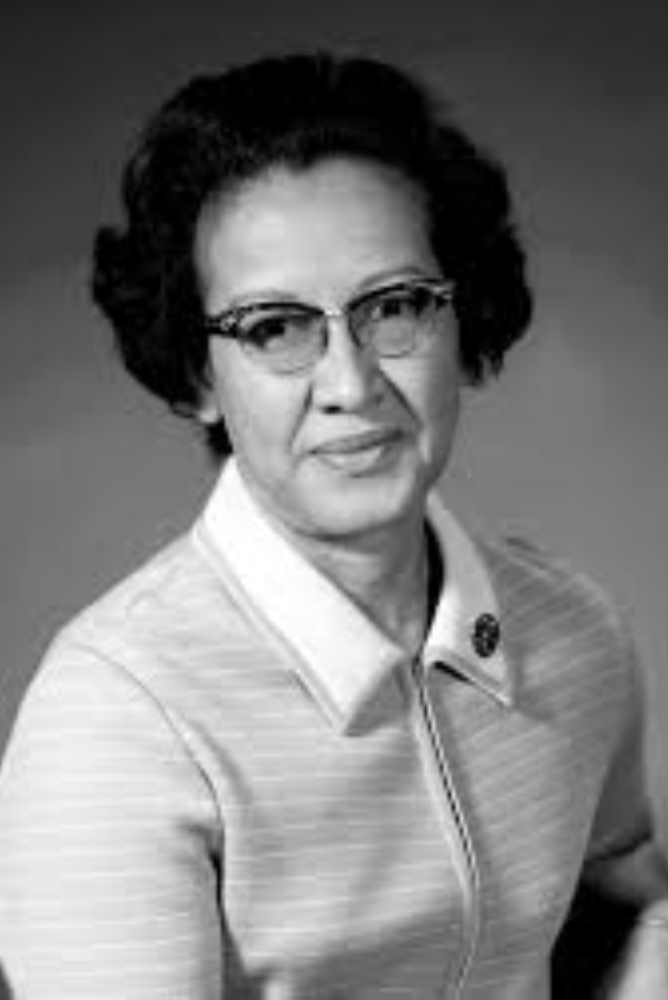

(Estados Unidos, 26 de agosto de 1918 - 24 de febrero de 2020)

Katherine Johnson nació el 26 de agosto de 1918 en White Sulphur Springs, Virginia Occidental, y ya desde muy pequeña demostró su talento para las matemáticas. Desgraciadamente las leyes de segregación racial que imperaban en los Estados Unidos en aquella época hacían que una afroamericana no pudiera estudiar más allá de octavo curso en su condado natal.
Se graduó a la temprana edad de 14 años y con 15 años continuó sus estudios superiores en la denominada West Virginia State College, donde consiguió sus grados en Matemáticas y Francés a la edad de 18 años.
El profesor W.W. Schiefflin Claytor vio semejante potencial en Katherine que creó asignaturas de geometría analítica y aeronáutica específicamente para ella.
En 1937 la (casi) única opción de una mujer afroamericana para trabajar fuera de casa era dedicarse a la enseñanza. Fue así como Katherine se mudó a Marion (Virginia) a ejercer como profesora de matemáticas, música y francés. Según sus propias palabras, fue en Virginia donde sufrió las consecuencias de la segregación racial y el racismo por primera vez de forma consciente.
Corría el año 1950 cuando se enteró que la NACA (National Advisory Committee for Aeronautics), predecesora de la NASA (National Aeronautics and Space Administration), buscaba mujeres afroamericanas para tareas de cálculo en el Departamento de Guía y Navegación. Aunque no pudo conseguir el trabajo en 1950 por estar lleno el cupo de contratación, Katherine empezó a trabajar para la NACA en 1953.
Como experta en matemáticas y geometría, su trabajo consistía en realizar todas las operaciones y comprobaciones de cálculo que requerían los ingenieros aeronáuticos. A pesar de las barreras iniciales que pudo sufrir al inicio de su carrera debido a su doble condición de mujer y afroamericana, poco a poco se fue ganando el reconocimiento de sus colegas. Su asombrosa carrera como matemática, científica espacial e informática teórica la convirtieron en todo un referente en la NACA/NASA.
Fue la encargada de llevar a cabo los cálculos del Proyecto Mercury desarrollado por la ya NASA entre 1961 y 1963.
Aunque en 1962 la NASA empezó a utilizar computadoras electrónicas para realizar los cálculos, ella fue la encargada de verificar las cuentas de la computadora que llevarían a John Glenn en su vuelo orbital alrededor de la Tierra en la nave Friendship 7.
Calculó la trayectoria del Apollo 11 que llevaría el hombre a la Luna en 1969. Además, sus cálculos ayudaron a sincronizar el módulo lunar con el módulo orbital. Katherine comentaba: “yo había hecho los cálculos y sabía que eran correctos, pero podía pasar cualquier cosa”. De hecho, algo inesperado pasó durante la misión Apollo 13 y Katherine ayudó, una vez abortada la misión, a que la nave volviera a la Tierra implementando procedimientos y cartas de navegación.
También participó en el programa Space Shutlle y en planes de misión a Marte hasta su jubilación, en 1986, después de treinta y tres años de servicio en la NASA.
“Siempre tendremos la STEM con nosotros. Algunas cosas desaparecerán de nuestra vista, pero siempre habrá ciencia, ingeniería y tecnología. Y siempre, siempre, habrá matemáticas”, afirmaba.
Murió a los 101 años, el 24 de febrero de 2020 en Estados Unidos.